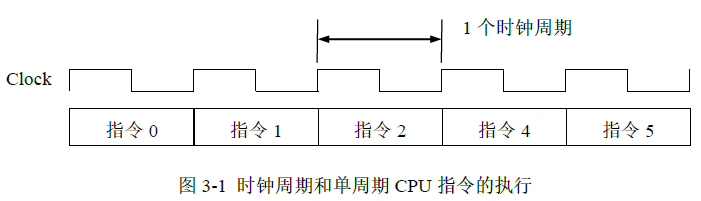
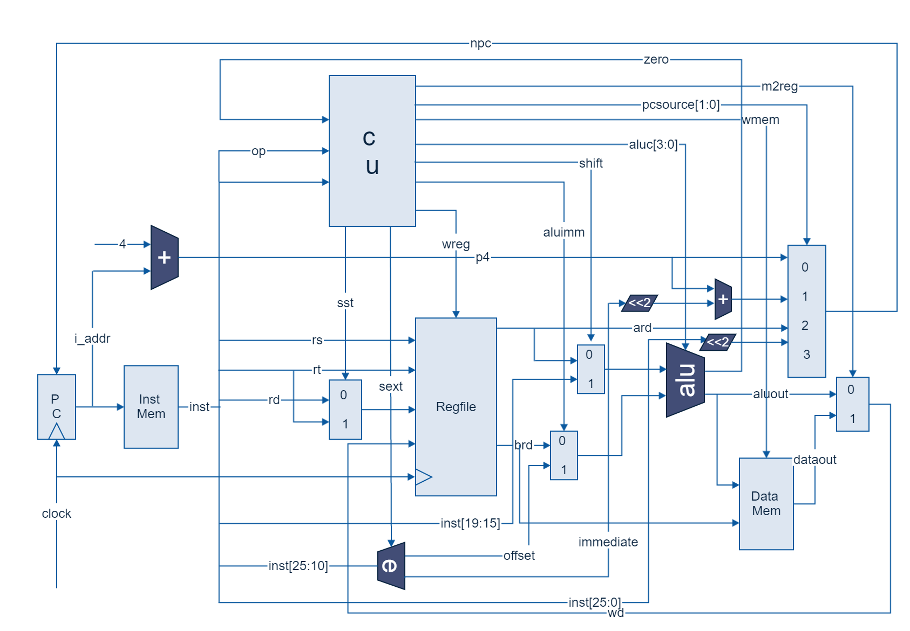
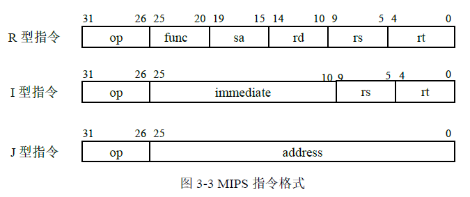
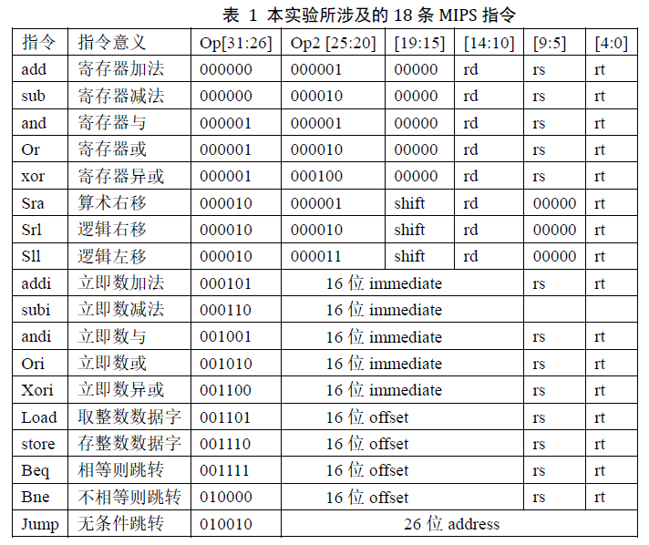

本设计为计算机系统结构实验，写此文仅为总结。
1.准备工作
2.设计总体要求
(1)概述
单周期（Single Cycle）CPU是指CPU从取出1条指令到执行完该指令只需1个时钟周期。

一条指令的执行过程包括：取指令→分析指令→执行指令→保存结果（如果有的话）。对于单周期CPU来说，这些执行步骤均在一个时钟周期内完成。
(2)设计实现电路

(3)实现指令集
MIPS指令系统结构有MIPS-32和MIPS-64两种。本实验的MIPS指令选用MIPS-32。以下所说的MIPS指令均指MIPS-32。
MIPS的指令格式为32位。图3-3给出了MIPS指令的3种格式。

本实验只选取了18条典型的MIPS指令来描述CPU逻辑电路的设计方法。表3-1列出了本实验的所涉及到的18条MIPS指令。

Op和Op2为操作码；
shift保存要移位的位数；
rd、rs、rt分别为寄存器的寄存器号；
immediate保存立即数的低16位；
offset为偏移量；
address为转移地址的一部分。
1、对于add/sub/mul/and/or/xor rd,rs,rt指令 //rdrs op rt
其中rs和rt是两个源操作数的寄存器号，rd是目的寄存器号。
2、对于sll/srl/sra rd,rt,shift 指令 //rdrt 移动 shift位
3、对于addi/muli rt,rs,imm 指令 //rtrs+imm(符号拓展)
rt是目的寄存器号，立即数要做符号拓展到32位。
4、对于andi/ori/xori rt,rs,imm 指令 //rtrs op imm(零拓展)
因为是逻辑指令，所以是零拓展。
5、对于load rt,offset(rs) 指令 //rt memory[rs+offset]
load是一条取存储器字的指令。寄存器rs的内容与符号拓展的offset想加，得到存储器地址。从存储器取来的数据存入rt寄存器。
6、对于store rt,offset(rs) 指令 // memory[rs+offset] rt
store是一条存字指令。存储器地址的计算方法与load相同。
7、对于beq rs,rt,label指令 //if(rs==rt) PClabel
beq是一条条件转移指令。当寄存器rs内容与rt相等时，转移到label。如果程序计数器PC是beq的指令地址，则label=PC+4+offset<<2。offset左移两位导致PC的最低两位永远是0，这是因为PC是字节地址，而一条指令要占4个字节。offset要进行符号拓展，因为beq能实现向前和向后两种转移。
8、bne指令去beq类似，但是是在寄存器rs内容与rt不相等时，转移到label。
9、对于jump target指令 //PCtarget
jump是一条跳转指令。target是转移的目标地址，32位，由3部分组成：最高4位来自于PC+4的高4位，中间26位是指令中的address，最低两位为0。
————————————————————— 未完待续—————————————————————————–